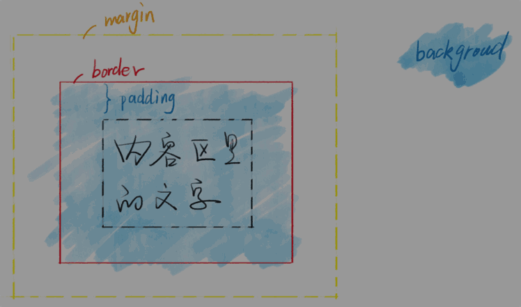
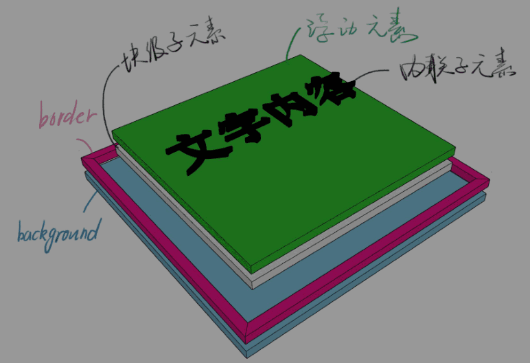
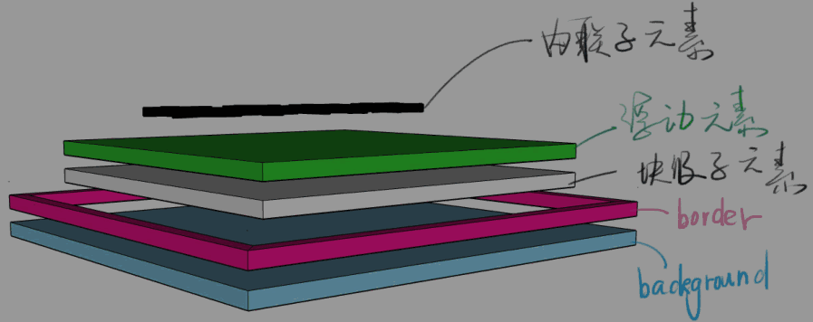
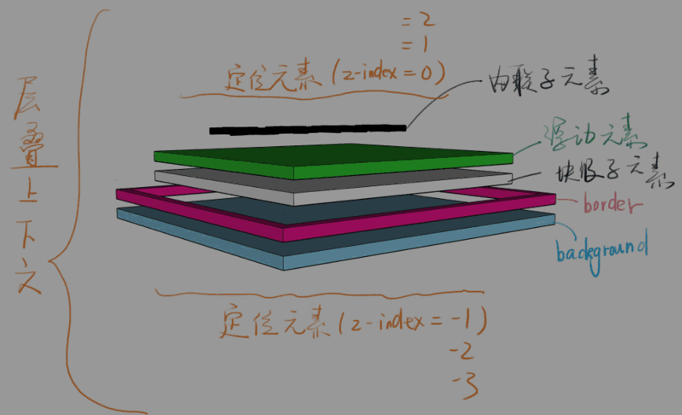

7-CSS定位
0. 其他#
-
Emmet:
-
alt + up / down
每次增加/减少 0.1
-
-
button:hover 展示
:hov -> 选中 :hover
-
SketchUp Pro
3D画图
1. 目标#
- CSS 定位
2. 主体#
1) 布局和定位的区别#
布局是屏幕平面上的
定位是垂直于屏幕的
2) 还得从文档流和盒模型说起#

-
背景的范围是从哪到哪？
border 外边沿围成的区域
border 半透明试试
3) 一个 div 的分层#



浮动元素脱离文档流
其实就是浮起来了一点点
4) 新属性 - position#
-
position
- static 默认值，待在文档流里
- relative 相对定位，升起来，但不脱离文档流
-
absolute 绝对定位，定位基准是祖先里的非 static
absolute 是相对于祖先元素中最近的一个定位元素（position 不是 static）定位的
-
fixed 固定定位，定位基准是 viewport (有诈)
- sticky 粘滞定位，不好描述直接举例
-
经验
- 如果你写了 absolute，一般都得补一个 relative
- 如果你写了 absolute 或 fixed，一定要补 top 和 left
- sticky 兼容性很差，主要用于面试装逼
4.1) position: relative#
-
使用场景
- 用于做位移 （很少用）
- 用于给 absolute 元素做爸爸 （一会讲）
-
配合 z-index
- z-index: auto 默认值，不创建新层叠上下文
- z-index: 0 / 1 / 2
- z-index: -1 / -2
-
经验
- 写 z-index: 9999 的都是彩笔
- 学会管理 z-index
4.2) position: absolute#
-
使用场景
- 脱离原来的位置，另起一层，比如对话框的关闭按钮
- 鼠标提示
-
配合 z-index
-
经验
- 很多彩笔都以为 absolute 是相对于 relative 定位的
- 某些浏览器上如果不写 top / left 会位置错乱
- 善用 left: 100%
- 善用 left: 50%; 加负 margin
4.3) position: fixed#
-
使用场景
- 烦人的广告
- 回到顶部按钮
-
配合 z-index
-
经验
手机上尽量不要用这个属性，坑很多
不信你搜索一下“移动端 fixed”
5) 层叠上下文#
-
比喻
- 每个层叠上下文就是一个新的小世界（作用域）
- 这个小世界里面的 z-index 跟外界无关
- 处在同一个小世界的 z-index 才能比较
-
哪些不正交的属性可以创建它
- MDN
- 需要记忆的有 z-index / flex / opacity / transform
- 面试官也不太懂，不用花时间背
- 忘了就搜 “层叠上下文 MDN”
-
负 z-index 逃不出小世界